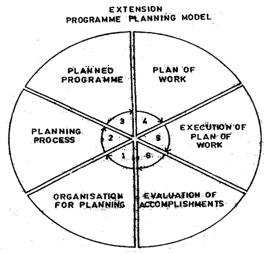

AEXT392:: Lecture 02 ::Extension Program Planning and Evaluation

EXTENSION PROGRAMME PLANNING AND EVALAUTION
To understand the extension programme planning process, certain basic concepts of an extension programme, planning and extension planning need to be understood.
Extension programme
The word 'programme' has several distinct meanings in the dictionary. It mans a proclamation, a prospectus, a list of events, a plan of procedure, a course of action prepared or announced before hand, a logical sequence of operations to be performed in solving a problem. When used by an organization, it means a prospectus or a statement issued to promote understanding and interest in an enterprise.
According to Kelsey and Hearne (1949), an "extension programme" is a statement of situation, objectives, problems and solutions'.
According to the USDA (1956), an "extension programme" is arrived at co-operatively by the local people and the extension staff and includes a statement of:
- The situation in which the people are located;
- The problems that are a part of the local situation;
- The objectives and goals of the local people in relation to these problems; and
- The recommendations or solutions to reach these objectives on a long-time basis (may be several years) or on a short-time basis (may be one year or less).
Leagans (1961) says that an "extension programme" is a set of clearly defined, consciously conceived objectives or ends, derived from an adequate analysis of the situation, which are to be achieved through extension teaching activity'.
Lawrence (1962) says that an "extension programme" is the sum total of all the activities and undertakings of a county extension services. It includes: (i) programme planning process; (ii) written programme statement; (iii) plan of work; (iv) programme execution; (v) results; and (vi) evaluation.
- From the above definitions, it is clear that an extension programme:
- Is a written statement;
- Is the end product of extension programme planning;
- Includes a statement of situation, objectives, problems and solutions;
- Is relatively permanent but requires constant revision;
- May include long-term as well as short-term programme objectives;
- Forms the basis of extension teaching plans;
- Has been drawn up in advance; and
- Has been built on the basis of content.
So, we can define an extension programme as a written statement of situation, objectives, problems and solutions which has been prepared on the basis of an adequate and systematic planning effort and which forms the basis of extension teaching activities in a specific area, for a given period.
Definitions for a set of important terminologies in this regard would provide the needed clarity :
Programme is a written statement containing a more pertinent factual data used in decision-making, the problems agreed upon with priority assignment and the possible solutions to the problems'.
Plan or Plan of work is an outline of activities so arranged as to enable efficient execution of the entire programme. It answers the questions of what, why, how, when, where and by whom the work is to be done.
Project is a single item of the annual plant containing the method of solution of a single selected problem
Calendar of work is a plan of work arranged chronologically, according to the time when step of work is to be done. It is a time schedule of work.
Aim is a broad objective. It is a generalised statement of direction and may have several objectives. It is also said to be an end in view to give direction to the creative process.
Objective is a direction of movement. A well stated objective is always measurable. It is also said to be a goal of growth.
Goal is a distance in any given direction, proposed to be covered in a given time.
Planning
The basic concept of planing appears to be well accepted in our culture. It is regarded as an integral and important dimension of our culture's rational value orientation. Rational value orientation assumes a conscious systematic approach to problem solving, i.e., problem definition, data gathering and choosing between alternative ends and means on the basis of predetermined criteria. Almost everyone accepts the premise that planning is important and necessary for individuals, for families and for business organizations. The most effective planning effort would be that 'which achieves the greatest degree of performance of the actions, motions or operations implied by a set of planning concepts which depict the ideal process (Boyle, 1965).
Assumptions on Extension Planning
The concept of extension planning is based on a number of assumptions. Boyle (1965) has listed the following assumptions in this regard:
- Planning change is a necessary prerequisite to effective social progress for people and communities.
- The most desirable change is predetermined and democratically achieved.
- Extension education programmes, if properly planned and implemented, can make a significant contribution to planned change.
- It is possible to select, organize and administer a programme that will contribute to the social and economic progress of people.
- People and communities need the guidance, leadership and help of extension educators to solve their problems in a planned and systematic way.
Extension Programme Planning
Having described the concepts of planning and extension programme, now the stage is set to examine the concept of extension programme planning. A few points need to be explicated before attempting a definition.
1. Extension programme planning is a process:
The dictionary meaning of 'process' is 'any phenomenon which shows a continuous change in time' or 'any continuous operation or treatment'. If we accept this concept of process, we view events and relationships as dynamic, ongoing, ever-changing and continuous. When we label something as a process, we also mea that it does not have a beginning, an end, a fixed sequence of events. It is not static, at rest. The basis for the concept of process is the belief that man cannot discover the structure of physically reality; man must create it.
This definition of process suggests that 'a process is involved in which a series of actions culminates in the accomplishment of a goal' (Boyle, 1965). Viewed in this way, the concept of process involves a method, i.e., a process should be viewed as a sequential set of steps or several systematically ordered steps of planning, the performance of which leads to the accomplishment of a goal. In extension programme planning, the immediate goal would be the development of a programme document.
The concept a person has of the extension programme planning process will affect actions and mode of researching the process. Many programme-planning processes take place at any particular time at different levels of the extension organization. For example, programme planning occurs at the national level (five-year plans), at the state level (state plans, annual plans of work) and at the block level. In fact, planning at the block level is taking place when:
- The long-time plan or projected plan is being developed;
- The schematic budget is being planned;
- The annual plan of work is being developed;
- Detailed plans for individual learning experiences are developed with a major project.
2.Extension programme planning is a decision-making process.
Planning is basically a decision-making process- and so is extension programme planning. In extension programme planning, scientific facts are put to value judgements of the people through the implementation of a rational planning model in order to decide a programme which will be carried out through the extension teaching activities.
3.Extension programme planning requires advance thinking:
If we could know 'where we are' and 'where we are to go' we could better judge 'what to do' and 'how to do'. This statement lies at the heart of the nature of planning. Panning does not take place in a vacuum or automatically. It has to be made to happen.The most basic fact giving rise to planning is that effective rural development result from choice, not from chance; it results from design, not from drift. Good extension programme planning is an intellectual activity since it usually involves a study and use of facts and principles. It requires knowledge, imagination and reasoning ability. It is a complex exercise as it involves people their needs, their interests, useful technology, educational process, analyzing a situation and making decision about what should be done, determining useful actions, projecting the desired shape of things in future and several other components, which are rarely simple.
4.Extension programme planning requires kill and ability on the part of planners:
Planning effective extension education programmes requires a number of high-level professional skills. Needed abilities include understanding and skill in the following broad areas:
- Understanding the nature and role of extension education organization.
- Knowledge and understanding of the technology related to the subject with which the programme is concerned.
- Ability to clarify the objectives of a programme and to so state them that they are useful in guiding its execution.
- Skill at seeing the relationship between principles and practice.
- Skill at inquiry and human relationships.
5.Extension programme planning is built round content:
A programme regarding any extension activity can only be built on the basis of content. Without some express purpose, there can be no planning. Extension programme planning is build around available improved technology, the people, their resources, problems, needs and interests.
6.Extension programme planning is a social action process:
Extension programme planning involves interaction and the decisions so taken in the form of a programme affect others. Interaction assumes some type of communication between two or more people in the planning process. So when the extension staff involving specialists and people's representatives decides on the programme content for extension teaching for the coming year, it is involved in social planning. In this process, the scientific data is put to value judgements so as to decide the intended direction of change and also the appropriate methods to be used to reach these goals. Further, the resultant programme has many social consequences in terms of interaction with other people, e.g., to inform them, educate them, persuade them, in order to introduce improved technology into their minds and actions.
7.Extension programme planning is a collaborative effort:
Extension programme planning is a collaborative effort involving identification, assessment, evaluation of needs, problems, resources, priorities and solutions.
8.Extension programme planning is a system:
Extension programme planning is a system as its procedures and processes are interrelated, ordered and linked progressively to form a collective whole. It includes several subprocesses, such as planning, designing, implementing, evaluation etc.
9.The end-product of extension programme planning is an extension programme:
The first consideration for anyone who is to concern himself with a process or set of procedures for planning is to clearly identify the primary purpose of the planning process to be developed. Many have suggested that the purpose of planning is for educating those who participate. According to Vanderberg (1965), 'the primary purpose of any planning, first and foremost is that of developing a sound, defensible and progressive course of action or plan. In the process followed, many other benefits might accrue, such as the education of participants, but we want a plan which can and will be used'.
Extension programme planning defined
Having said that extension programme planning is a social action, decision- making, inter actional process in which advance thinking is needed for identifying the needs, interests and resources of the people through educational means to prepare a blueprint for action we are now ready to formally define this concept. However, it appears appropriate here to first list some of the definitions of extension programme planning as given in the literature.
1.Programme planing is viewed as a process through which representatives of the people are intensively involved with extension personnel and other professional people in four activities (Boyle, 1965):
- Studying facts and trends;
- Identifying problems and opportunities based on these facts and trends;
- Making decisions about problems and opportunities that should be given priority; and
- Establishing objectives or recommendations for future economic and social development of a community through educational programmes.
2.This are the process whereby the people in the country, through their leaders, plan their extension programme. Country and state professional extension staff members assist in this process. The end-result of this process is a written programme statement (Lawrence, 1962).
3.Extension programme planning is the process of determining, developing and executing programmes. It is a continuous process, whereby farm people, with the guidance and leadership of extension personnel, attempt to determine, analyse and solve local problems. In this, there are three characteristics:
- What needs to be done;
- When it should be done; and
- How it should be done (Musgraw, 1962).
4.An organized and purposeful process, initiated and guided by the agent, to involve a particular group of people in the process of studying their interests, needs and problems, deciding upon and planning education and other actions to change their situation in desired ways and making commitments regarding the role and responsibilities of the participants (Olson, 1962).
An analysis of these and other definitions of extension programme planning implies that it:
- Is a decision-making, social process;
- Involves advance thinking;
- Is a progressive step-by-step process;
- Uses educational means in defining the goals and situations;
- Is built around improved technology, people, their needs, interests, resources, values, attitudes and skills; and
- The end-product is a written statement of situation, problems, objectives and solutions.
- Thus extension programme planning may be defined as:
- A decision-making, social-action process in which extension educationists involve people's representatives,
- To determine their needs, problems, resources and priorities,
- In order to decide on an extension programme consisting of situation analysis, problems, objectives and solutions,
- Which will form the basis of extension teaching plans for a given period.
Rationale of programme planning
1.Progress requires a design: Effective education is a result of design not drift; it results from a plan-not from trial and error. The experience of workers in education and in other educational agencies has been that progress is made most effectively when a plan of action is set forth and followed. The pay-off for educational effort comes when people change their behaviour to improve their situation. These results come most rapidly when careful planning is done and when effective teaching methods are used.
2.Planning gives direction: There are no tests for directing the people's learning in extension. This arguments the difficulty of designing a plan and underscores the fact that planning is one of the most important jobs of extension workers.
In planning or constructing a course of study, the teacher should be guided by five major factors: (1) the purpose for which the course is offered, its aims; (2) the characteristics and needs of those who are to take the course; (3) the educational environment of these persons; (4) the sources of information available; and (5) the requirements or demands of the vocation or other uses to which the learning is to be put. These factors apply to the development of extension programmes as well as to the curriculum of the public schools. The factors that apply to the study of a situation will be considered more closely a little later.
3.Effective learning requires a plan: There must be consciously directed effort on the part of the teacher to give guidance to the learning process. The direction of this teaching effort can best be stated in terms of objectives. They must be developed with the people to be taught and must be capable of attainment by and with the people concerned.
4.Planning precedes action: The results of an action are dependent on the following: adequacy of analysis of the problems, situation of objectives and involvement of the people. Through the planning process, questions such as these are posed:
i. What information do farm men and women need most?
ii. Which kind of information shall be extended?
iii. What information shall be extended first?
iv. How much time shall be devoted to this line of work?
v. How much effort shall be devoted to this line of work?
The answers to these questions lie in the programme planning process.
Kelsey and Hearne (1949) have given the following rationale for a planned extension programme .According to them, sound extension programme planning:
- Is based on analysis of the facts in the situation;
- selects problems based on needs;
- determines objectives and solutions which offer satisfaction;
- reflects performance with flexibility;
- incorporate balance with emphasis;
- envisages a definite plan of work;
- is a continuous process;
- is a teaching process;
- is a coordinating process;
- involves local people and their institutions; and
- provides for evaluation of results.
Thus it could be said that planning programmes is an integral part of the development process and ensures better and efficient utilization of resources, accountability and human development.
Principles of programme planning
After a critical analysis of the programme planning principles available in extension literature, Sandhu (1965) identified a set of principles that may be applicable in developing countries.
I.Programme
1.Extension programme planning is based on analysis of the facts in a situation
It is important to take into account the conditions that exist at a particular time. This implies that factors such as land, crops, economic trends, social structure, economic status of the people, their habits, traditions and culture, in fact, everything about the area in which the job is to be done and its people, may be considered while planning an extension programme for an area. These factors may be viewed in terms of established long-term objectives and rural policy. The outcome of previous plans should also be reviewed and results utilized.
Brunner and Yang (1949) argue that there is no greater mistake than to assume that technical know-how alone will solve the problems of the farmers. They say that no programme or even technique can achieve the desired results when not in harmony with the culture of the people. 'Extension knows, if need be, the surer way is to effect cultural change by the slow but certain process of education'.
2.Extension programme planning selects problems based on people's interests
and needs
Sound programme building selects problems based on people's needs. I t is necessary to select these problems which are most urgent and of widest concern. Choice of problems must be from among those highlighted by an analysis of the facts regarding what are felt as unfelt needs. To be effective, extension work must begin with the interests of the families. It must meet interest and use them as a spring-board for developing further interests. It is common knowledge that people join together because of mutual interests and needs.
Brunner (1945) said that an extension programme must meet the felt needs of the people. Leagans (1961) has recommended that the extension workers adopt the subject matter and teaching procedure to the educational level of the people, to their needs and interests, and to their resources.
3.Extension programme planning determines definite objectives and solutions which
offer satisfaction
In order to hold interest, we must set working objectives and offer solutions which are within reach and which will give satisfaction on achievement. This is related to motivation for action. People must see how they or their communities are going to benefit from the proposed solutions. Very often the simplicity or dramatic effect of the practice recommended is the most potent factor in its wide adoption. Further, if there is to be progress and not more evolution in the development of man, the objectives must be periodically revised in view of the progress made. In other words, as changes occur, objectives need to be re determined to allow for even further progress to be realized.
4.Extension programme planning has permanence with flexibility
Any good programme must be forward looking and permanent. Permanence means anticipating years of related and well organized effort. Along with this lower process, which both follow and makes a long-term trend, experience has shown that particular items will need to be changed to meet unforeseen contingencies or emergencies. Without flexibility, the programme may not, in fact, meet the needs of the people. A programme should be prepared well in advance of its execution but not too far ahead of time. Ordinary events may subject it to change in part though not in total. It is obvious that an extension programme must be kept flexible to meet the changing needs and interests of the people.
5.Extension programme planing has balance with emphasis
A good programme should cover the majority of people's important interests. It must be comprehensive enough to embrace all groups, creeds and races at all levels and community, block, state, national and international problems. It is futile to deal with only one phase of life in a community as an end in itself. At the same time, a few of the most important or timely problems should be chosen for emphasis. To avoid scattered effort, something must stand out. Decisions must be made as to which of the needs are most urgent. The next consideration in choosing items for emphasis is to promote efficiency by permitting a good distribution of time and effort throughout the year. Too many things carried out simultaneously will divide either the worker's or the people's attention.
II. Planning process
6.Extension programme planning has a definite plan of work
No matter how well a programme is thought through, it is of no use unless carried out. This implies good organization and careful planning for action. A plan of work is an outline of procedure so arranged as to enable efficient execution of the entire programme. It is the answer to what, where, when and how the job will be done. In carrying out programme plans, different leaders and groups may work on various phases, i.e., the women in the community may work on one segment, the men on a second segment and youth-club members on a third. Organization should be used as a tool to accomplish these purposes, never as an end in itself.
7.Extension programme planning is an educational process
The people who do the planning may participate in local surveys and neighbourhood observations. This provides an opportunity for them to learn more about their own community and area and increases their interest. The extension worker has the responsibilities of providing local leaders with the knowledge, skills and attitudes they must have if they are to help in educationally serving the people. Essentially, learning takes place through the experiences the learner has and the responses he makes to the stimuli of his environment. The experience gained in finding facts, analyzing situations, recognizing problems, stating objectives and thinking of possible solutions and alternatives should make for a better and more effective learning environment. The extension personnel should remember this fact and provide opportunities for the effective participation of local people in programme planning.
8. Extension programme planning is a continuous process
Since programme planning is viewed as an educational process and since education is seen as a continuous process, therefore it logically holds that extension programme planning is a continuous process. There is no question of exhausting new knowledge, either in the subject matter with which we deal or in the methods of teaching. With the constant flux of agricultural technology, extension education is faced with an increasingly more difficult job as it tries to serve the needs and interests of the people. Sutton (1961) said that extension in a changing society must adjust and plan for the future to serve the needs of people. He set forth five steps within might be useful in making necessary adjustments:
i. Keep choice to the people
ii. Be flexible and ready to grasp with firmness new problems as they arise.
iii. Work with people in seeking practical solutions to their problems.
iv. Keep abreast of technological and social change.
- Close the gap between research discovery and practical application.
It is obvious that tomorrow's problem will not be the same as today's. So extension must make periodic adjustments in its plans to meet the changing problems. Extension must also be alert to the change that is going on in Science and Technology. With new technology, solutions to problems change. It is therefore necessary to view extension programme planning as a continuous process though its recurrence is cyclic.
9.Extension programme planning is a co-ordinating process
Extension programme planning finds the most important problems and seeks agreement on definite objectives. It coordinates the efforts of all interested leaders, groups and agencies and considers the use of resources. It obtains the interest and co-operation of many people by showing them why things need to be done. This is important in working with people. Within the extension organization, the block staff may work together on an integrated programme, each member devoting part of his energy to appropriate phases.
10.Extension programme planning involves local people and their institutions
Involvement of local people and their institutions is very essential for the success of any programme for their development. People become interested and give better support to the programme when they are involved in the planning process. So, extension programmes should be planned with the people and not for them.
11.Extension programme planning provides for evaluation of results
Since extension programme planning involves decision-making procedures, so evaluation is important in order to make intelligent decisions aimed at achieving the stated objectives. Matthews (1962) pointed out that extension progarmme planning and evaluation go together. Kelsey and Hearne (1949) have said that all other principles of programme building are related to evaluation.
Effective evaluation will, of course, depend on clear objectives, knowing which people we are trying to teach and having records of the results in terms that reflect changes in their action. Starting a programme with the intention of engaging in a careful evaluation at the close of a specific period has a salutary effect on all the intermediate processes. However, provision has to be made both for concurrent and ex-post facto types of evaluation.
EXTENSION PROGRAMME PLANNING MODEL
Sandhu (1965) developed a model for planning extension and rural development programmes. This model has six phases with a number or steps to be followed under each phase.

Fig.30. Extension Programme Planning Model
Planning Process Involves
1. Reaching, Understanding regarding principles, procedures, roles and time schedules
2. Analysis situation
3. Determining programme objective
4. Selection problems
5. Finding solution
The various phases and steps involved in this model are:
Organisation for Planning
I. Planning Process
1. Reach understanding regarding principles, procedures, roles and time schedule.
2. Analyse situation.
3. Determine objectives.
4. Select problems with due regard to priorities.
5. Find solutions.
II. Planned Programme
Prepare a written statement of:
i) situation
ii) objectives;
iii) problems; and
iv) solutions.
III. Plan of work
Prepare a plan of work containing information regarding:
i) people to be reached;
ii) goals, dates and places;
iii) teaching procedures to be followed;
iv) duties, training and recognition of leaders;
v) roles to be played by extension personnel; and
vi) roles to be played by other agencies.
IV. Execution of plan of work
i) Make advance arrangement for inputs and teaching aids.
ii) Interpret the approved programme to the staff and people's representatives.
iii) Carry out the planned programme, phase by phase, in a co-ordinated manner.
V. Evaluation of accomplishments
i) Do concurrent evaluation.
ii) Do ex-post facto evaluation.
Organisation for Planning
The concept of involving potential clientele in the planning of extension programmes has received widespread acceptance. Involvement of people in making decisions about educational objectives not only results in better decisions about educational objectives, but also speeds up the process of educational change. By participating in the analysis of the local situation, the people's representatives are better informed and are better prepared for positive action.
The following conditions should be met in order to ensure that a good organisation has been set up
1. All social systems and special interest groups are identified.
2. Members of the planning committee represent all major interest groups, various economic and social levels of people, major vocations of the locality and other important elements in the area.
3. Each member of the planning committee clearly understands
a) the purpose of the group;
b) how the group should function in attaining its purpose; and
c) his individual role as a member.
4. Members of the planning committee have been elected, nominated or co-opted by appropriate democratic procedures.
I. Planning process
1. Reaching understanding regarding principles, procedures, roles and time schedule
It is necessary that all staff and the people's representatives are familiar with the principles and procedures of programme planning for the purposes of clarity and uniformity of action.
The following conditions should be met in order in fulfil the spirit of this step:
i). A clearly defined statement of purpose and roles of each member is given by the planning committee.
ii). The block, district and state level extension workers and programme planning committee members have understood :
a) the roles of extension workers in programme planning;
b) the role of programme planning committee members;
c) the purpose of programme planning;
d) the scope of extension's educational responsibilities;
e) the procedures to be followed;
f) the principles to be kept in view; and
g) the time schedule to be followed.
2. Analyse situation
Situation analysis involves collection, analysis and interpretation of the existing facts. Good planning depends on the availability of adequate and reliable data and scientific elaboration and interpretation of the same.
The following criteria should be met in order to ensure that this step has been adequately followed.
- Facts needed to evaluate the accomplishment of the previous year's programme are collected.
- Local facts needed to define correct and projected needs and interests and problems of the area are assembled
- The basic facts assembled and collected about background information are analysed and interpreted.
- The major needs and problems of the area, which are within the scope of extension’s educational responsibility, are identified.
3. Determine objectives
It is essential in the programme planning process that before deciding on the projects to be undertaken, basic objectives of the programme are determined by the villagers in consultation with the extension staff.
The following conditions or qualities will exist when objectives have been determined adequately and properly
- Objectives have been determined relating to major problems, need and/or interests as determined by the programme planning committee.
- Both immediate and long-term objectives have been determined.
4. Select problems with due regard to priorities
Selection of problems to be tackled will involve identification, classification and selection with due regard to priorities. Identification of problems will be done on the basis of situation analysis. Once the problems have been identified, it is desirable that they be properly classified into the following categories:
- Problems which can be solved by the people themselves with no outside financial aid.
- Problems which can be solved by the people with the aid of the Panchayat Samiti
- Problems which can only be solved with the help of Government funds
The following conditions will exist when the requirements of this step have been adequately met:
- Of the identified problems, the most felt and of widest concern are selected by the extension agents and people's representatives.
- Selected problems are related to the family, community block and situation.
- For tackling the selected problems, the time is scheduled on greatest priority basis
5. Find solutions to problems
The Village Level Workers at the village level and the concerned Extension Officer at the block level are two most important functionaries who advise the village families and the village institutions regarding solutions to their problems. The other Extension officials at various levels may join with the team in finding solutions to problems. Experiences of the farmers and suggestions of the specialists will help in arriving at a joint decision.
The following conditions will exist when this step has been properly carried out
- All the available research findings in the State are collected and projected.
- Block level and district level specialists make suitable solution to the problems according to the research findings.
II. Planned Programme
As Leagans (1961) pointed out, it is of utmost importance that the staff and the people in each area not only develop an extension programme, but also prepare the programme in a written form that is readily understood and is suitable for obtaining approval and use as a guide for officials and non-officials.
The problems should be stated from the viewpoint of the farm, the home and the community. They should not be stated in terms of solutions. The objectives should also be stated at a lower level in specific and measurable terms. They should include details about the learners to be reached subject matter to be taught and the behavioral changes to be effected. The objectives may also be stated from the point of view of the extension organisations and the extension public.
The following conditions will be met in order to have a good programme statement :
- The written programme should be suitable for use by the staff, planning groups and other individuals or groups concerned with the programme.
- It should clearly state the important problems or needs identified by the staff and the people in the programming process.
- It should specify the subject mater related to each objective that is highly significant to the people, socially or economically or both.
- It should be used as the basis for developing annual plans of work.
III. Plan of Work
Preparing a plan of activities directed towards solving selected problems is an important step. A plan of work is the listing of activities by which the objectives already decided upon are to be achieved.
The following conditions should exist in a good plan
- The plan of work is in written form.
- It has been developed co-operatively by the extension workers and people's representatives.
- It identifies the specific educational job to be done.
- The plan indicates for each educational job.
- How it will be done
- When it will be done
- Where it will be done
- Who will do it
- What people are to be reached
- The subject matter is appropriate considering the people's level of interests, knowledge, attitude and available time and technology.
- The plan provides for the needed training of extension workers and leaders.
- Specific changes to be achieved or evidence of accomplishment are indicated clearly.
IV. Implementation Phase
1. Make advance arrangement for inputs and teaching aids
The conditions to meet the requirements of this step are
- Realistic needs of inputs such as fertiliser, seeds, credit facilities etc. have been worked out jointly by the areas extension staff and the Panchayat Raj institutions.
- Needed inputs have been procured well in time and stocked at proper places.
- Teaching aids to be used by the extension workers have been prepared and/or procured in sufficient quantity, well in time.
2. Interpret the approved programme to the staff and the people's representatives.
The following criteria will be met to ensure that this step has been adequately undertaken
- The approved programme has been explained adequately.
- The plan of work has also been explained adequately.
- They have been explained to all the block staff, all the people's representatives and other important leaders.
3. Carry out the plan of work
The approved programme should be carried out, step by step, according to the plan of work and in a co-ordinated manner. The success of a programme depends on the methods used to implement it.
It should be ensured that -
- the plans for coordination including calendar of activities within and outside extension agency system
- the techniques, methods and materials vary appropriate to the situation and clientele
- the subject matter used was appropriate considering the people and their objectives
- the plans for shared responsibilities were followed.
V. Evaluation of Accomplishments
Concurrent and ex-post facto review of progress towards the objectives is an essential phase of extension programme planning. This keeps the extension agency on the right track and helps in differentiating means from ends. Evaluation of the activities should be undertaken jointly by the extension staff and the people's representative organisations at different levels.
Conditions that will exist when this guideline is met are as under
- Evaluation plans were developed for each of the phases of the programme to be evaluated as indicated in the annual plan of work.
- A report of accomplishments and implications was made to the extension governing group. The governing group in projecting their plans for extension activities gave the findings from the report of accomplishments and implications.
Extension Evaluation
Extension programmes are mostly funded with public money and are planned and implemented by an organization, which in most cases is a department of a government. In order to justify the appropriation of public funds and continuing support from the people, it is necessary that their management as well as impact be properly and adequately evaluated from time to time. How, to evaluate management, achievements and failures of these programmes has been a challenge to extension workers right from the time when planned extension programmes were introduced. However, 'it was when Tyler's (1950) philosophy of educational evaluation became a part of extension education that educational evaluation became a part of extension education that the pattern of extension educational evaluation took a more usable, understandable form' (Sabrosky, 1966).
The word 'evaluation' has its origin in the Latin word "valere" meaning to be strong or valiant. Its dictionary meanings are the determination of the value, the strength or worth of something, an appraisal, an estimates of the force of or making a judgement of something.
Evaluation as applied to the field of extension education, may be defined as "a process of systematic appraisal by which we determine the value, worth or meaning of an activity or an enterprise". It is a method for determining how far an activity has progressed and how much further it should be carried to accomplish objectives'. Thus to an extension worker evaluation means determining the results of his extension programmes in order to know the extent to which objectives have been achieved and why and what changes would be needed in case the programme is planned again, or in its implementation.
Tyler (1950) developed two basic notions regarding educational evaluation, which equally apply to extension evaluation. These notions are that the process of evaluation (i) is essentially a process of determining behaviour of the people covered under the programme and (ii) the process of determining the degree to which these behavioural changes are actually taking place. Thus extension evaluation may be said to be a process for determining behavioural changes of people resulting from extension programmes. Once evaluation became an integral part of the extension education process, extension managers started applying this process to evaluate programme planning, management and implementation aspects of extension programme.
Definitions of evaluation
More specific definitions of evaluation are given by persons involved in rural development programmes. While most of these definitions refer specifically to the assessment of the results of programmes of extension education, they can also be applied to the training aspect of such programmes. Some definitions of evaluation are:
- It is a process, which enables the administrator to describe the effects of his programme and thereby make progressive adjustments in order to reach his goal more effectively (Jahoda and Barnit, 1955).
- Programme evaluation is the determination of the extent to which the desired objectives have been attained or the amount of movement that has been made in the desired direction (Boyle and Johns, 1970).
- Programme evaluation is the process of judging the worth or value of a programme. The judgement is formed by comparing the programme should be (Steele, 1970).
- Evaluation is the process of delineating, obtaining and providing useful information for judging decision alternative (Stufflebeam, 1971).
- Evaluation is a co-ordinated process carried on by the total system and its individual subsystem. It consists of making judgements about a planned programme based on established criteria and known, observable evidence (Boone, 1985).
Nature of evaluation
1.Evaluation is not measurement: Evaluation is an integral part of extension education. All aspects of extension work need evaluation. Evaluation does not mean mere measuring of achievements, which is usually done after the programme is executed. Extension being an educational process, it is necessary to evaluate management of the programme and methods used, achievements accomplished in line with the objectives and also to determine the reasons for success or failure.
2.Evaluation is not exactly scientific research: When we think of evaluation as a process of collecting information as a basis for making decisions, forming judgements and drawing conclusions, we realise it has much in common with scientific research. But there is a great difference between our casual everyday evaluation and scientific research. However, the difference is a matter of degree rather than kind. Casual everyday evaluation can be placed at one end of the scale and scientific research at the other end. There are five locations on the scale with no sharp lines of distinction, i.e., casual everyday evaluation, self-checking evaluation, do-it yourself evaluation, extension evaluation studies and scientific research.

Types of evaluation
- Self-evaluation: This is to be carried out by every worker as a matter of routine. This requires the self-critical attitude which is so essential for extension work. By this self-critical attitude, the chances of an extension worker growing and continuously improving his professional competency become greater.
- Internal evaluation: Evaluation carried to by the agency responsible for the planning and implementation of the programme. Some of the other methods for internal evaluation are: systematic use of diaries and reports of workers, planned visits of staff members to work spot, use of special questionnaires and proforma for observation and inquiry etc.
- External evaluation: Evaluation conducted by a person or a committee outside the area of operation. One of the strong features of the Indian Community Development Programme is that simultaneous with its start an independent agency, namely the Programme Evaluation Organization, was established.
Evaluation can also be classified into (i) concurrent and (ii) ex-post facto evaluation.
Evaluate programme planning
As a result of experience, theory, research and experimentation, much information has been accumulated about how an extension programme should be planned. Progress in science and technology and the broadening of extension's clientele with the accompanying great variation in needs and interests have made the scientific planning of extension education programmes more important than ever before. There is considerable agreement on certain criteria which, if followed, make for successful extension programme planning at different levels. These criteria represent the ideal with which to compare our practices and procedures or programme planning. Some of the steps needed top evaluate or programming function in view of these criteria include:
i. Identify the evidence needed to form a judgement about each criterion.
ii. Specify the methods that will be used to obtain the evidence, such as personal observation, personal interview or through a systematic survey.
iii. On the basis of the evidence gathered, judge whether or not each criterion is being adequately satisfied in the programme planning activities.
Extension evaluation process
There are several models of evaluation available in the literature. However, a very simplified version of most of these models may be quite workable for evaluating extension programmes since, as Bhatnagar (1987) has pointed out, any extension evaluation process has to be based on certain assumptions. For example, if some inputs are provided in the form of a programme, specific outputs can be expected and if these outputs happen, then the purpose of the programme can be achieved; if the purpose is achieved, then the development goal is realised. This means that evaluation has to be so designed that the quality types and adequacy of the input measures, outputs and their impact in achieving the programme objectives have to be evaluated systematically.
Steps involved in an extension programme evaluative process may be as follows:
i) Formulate evaluation objectives
Specific objectives to be achieved through the evaluative process must be clearly and adequately identified and started. All further efforts should be knit around these objectives.
ii) Classify programme objectives
It is assumed that each extension programme, when formulated and implemented, will have specific well-defined objectives. Since evaluation is basically a process of determining the extent to which various extension teaching activities were organized and managed and the extent to which they contributed to achieving the goals, programme objectives must be clearly understood and if necessary, further broke down into measurable terms. This is a crucial step as all further efforts will be directed towards collecting evidence related to these objectives.
iii) Identify indicators
To identify indicators or the kind of evidence necessary to evaluate achievement in relation to specified programme objectives, it is necessary that specific beneficiaries of the programme be identified, the kind of behavioural changes expected in them be clearly stated, and the kin of learning experiences expected to be provided to them spelled out, together with the level of management to be achieved for provided those learning experiences are specified. Once this is done, identification of specific indicators to measures the achievements will not be difficult.
iv) Decide the kind of information needed
Once the indicators for evaluating the management and performance of a programme have been indicated, specific information to be collected may be worked out. Since there is usually more information than an extension worker can collect, he has to be very discriminating about the kind and amount of information that should be collected. Timing for collection of information may also need to be specified.
v) Sampling
The purpose of sampling is to take a relatively small number of units from a population in such a way that the evidence collected from them becomes representative evidence of the entire population. Although there are several sampling methods, perhaps stratified sampling procedures may be most suitable for extension evaluation studies a they allow inclusion of all interested groups and ensure enough heterogeneity in the sample.
vi) Decide the design of evaluation
An ideal design of evaluation may be an experimental one. This would allow separating the effect of the programme from other factors, by setting control and treatment groups. Several experimental designs, such as one-group pre-test-post-test design, static groups comparison, pre-test, post-test control group design, Solomon four-group design, longitudinal study design, etc. are available in literature and can be used. However, in actual practice, extension progammes are seldom run in a way that allows an experimental design of evaluation. In Pilot Projects, it might be possible to use an experimental design of evaluation. By and large, a survey method is use. This method can be used for evaluating ongoing progress or as an ex-post facto evaluation of the programme after it has completed its tenure.
vii) Collection and analysis of evaluation evidence
There are many methods for collecting information for evaluative purposes, such as the mail questionnaire, personal interview, distributed questionnaires, group interviews, case studies, systematic field observations, systematic study of secondary data etc. Selection of the right kind of data collection method will depend on the objectives of the evaluation, kind of information needed, time and resources available and the type of respondents from whom information is to be collected.
However, whatever the method used, a specific questionnaire or interview schedule or data recording sheet must be developed with care.
Once the data is collected, it must be tabulated, summarized and analyzed with adequate care. This step should not be rushed. To avoid delay, however, analysis may be done with the help of a computer.
viii) Interpretation of the results in a proper way
It is a very crucial as evaluation results can be missed also. Once tentative generalizations are arrived at, it may be appropriate and they are informally discussed among the interpreters as well as with programme planning and implementation officials, so that the results of evaluation are put in a proper perspective.
The evaluation results must clearly state the achievements, failures and future adjustments needed. A written report of the evaluation findings should be prepared and made available to all concerned.